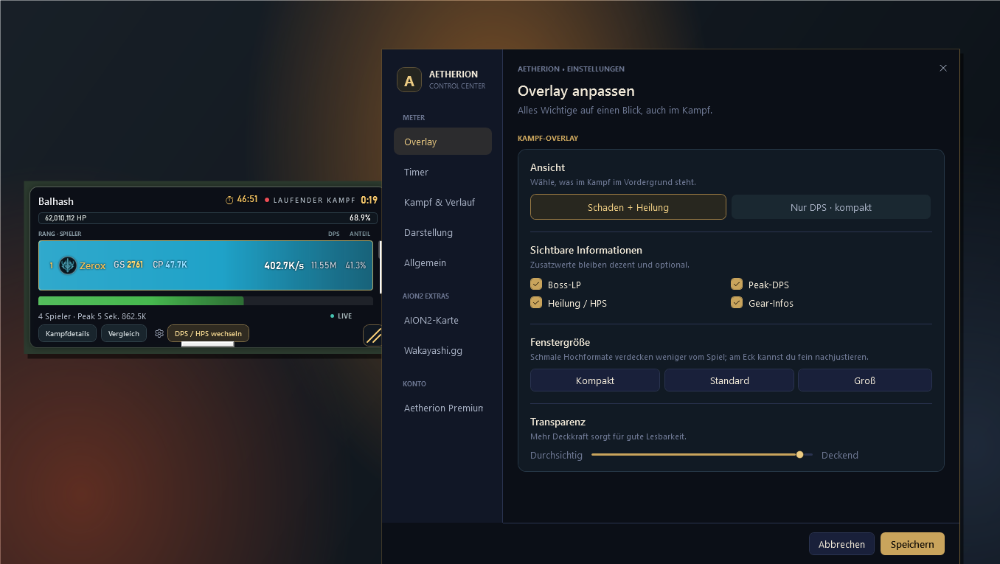

A
AETHERIONUpdate Vorschau · Version 0.3.39
Dein Kampf. Direkt im Blick.
Aetherion startet jetzt in deinem Live-Arbeitsbereich: das DPS-Overlay links, die Einstellungen griffbereit daneben. So kannst du deinen Meter sofort sehen und anpassen.
v0.3.39 · verfügbar

Vorschau der neuen Startansicht. Die Beispielwerte im Overlay dienen nur der Darstellung.
Neu in diesem Update
Neue Startansicht
Beim Öffnen erscheinen das kompakte Live-Overlay und das Einstellungsfenster direkt nebeneinander. Die wichtigsten Werte und Optionen sind damit ohne zusätzliche Navigation erreichbar.
Aufgeräumte Einstellungen
Die Einstellungsnavigation ist klarer gegliedert und trägt jetzt Aetherion-Branding. Meter-Optionen, AION2-Extras und Konto sind als Bereiche leichter zu finden.
Overlay-Optionen in einem Abschnitt
Ansicht, optionale Zusatzwerte, Fenstergröße und Transparenz sind in einer gemeinsamen, übersichtlichen Fläche zusammengefasst und durch klare Trennlinien strukturiert.
Fehlerbehebungen & Verhalten
- Ein weiterer Start über Verknüpfung oder App-Symbol bringt jetzt die laufende App und den Arbeitsbereich mit Overlay und Einstellungen nach vorn.
- Das Overlay wird beim App-Start sichtbar geöffnet, statt nur intern für Hotkeys vorbereitet zu werden.
- Die aktive Einstellungsseite wird in der Navigation deutlicher markiert; der Marker folgt beim Wechsel der Auswahl.
- Die bisherige Raid-Command-Kampfansicht bleibt in der App erreichbar.
Hinweis: Dieses Release dokumentiert Änderungen an Startverhalten und Oberfläche. Es enthält keine separat ausgewiesenen Korrekturen an DPS-Berechnung oder Kampferkennung.
Aetherion DPS Meter · Versionshinweise für Kunden · 0.3.39